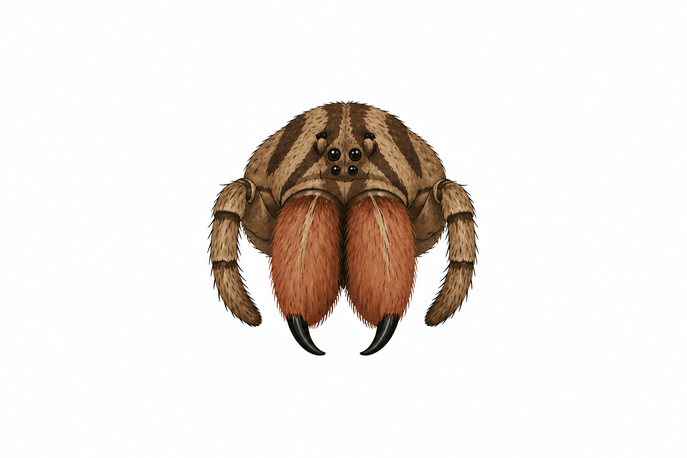

Pergunta 4
Possuem quelíceras avermelhadas?
Este recurso didático tem finalidade educativa e contribui para a identificação correta de animais, evitando acidentes e promovendo a preservação da biodiversidade.
Observe atentamente a imagem e as características descritas para responder à pergunta..

Possuem quelíceras avermelhadas?
Este recurso didático tem finalidade educativa e contribui para a identificação correta de animais, evitando acidentes e promovendo a preservação da biodiversidade.